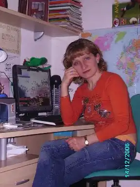

Шевченко Тамара Володимирівна народилася 14 березня 1969 року в с.Суворівка Новоодеського району Миколаївської області.
У 1992 році закінчила Миколаївський державний педагогічний інститут за спеціальністю українська мова та література.
Чотири роки працювала вчителькою народознавства та української мови в селі Явкине Баштанського району. Це село мені стало дуже рідним, бо там народився мій син, там я знайшла багато друзів і, взагалі, багато чому навчилася. Потім у рідному селі Суворовка працювала завучем з навчально-виховної роботи та вчителькою російської мови. Роботу свою дуже любила. Доля закинула мене до Італії у 2002 році. Тут росте мій син, ходить до школи, має багато друзів. Я в Італії переробила багато робіт, знову почала вчитися, спершу на різних курсах, а потім в одному із учбових закладів на вечірньому відділенні. Хочу багато встигнути та досягти, а для цього потрібно краще знати італійську мову. Нещодавно почала працювати Міжкультурним Посередником. В обов'язки людини цієї професії входить: допомога дітям українців, які приїхали до Італії та не знають мови, хворим іноземцям у лікарні (багато наших іноземців не ідуть до лікаря, бо не можуть розказати про свої проблеми), проведення свят, присвячених Українї, вечорів, зустрічей.